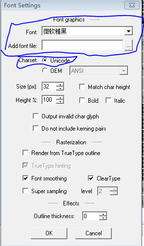
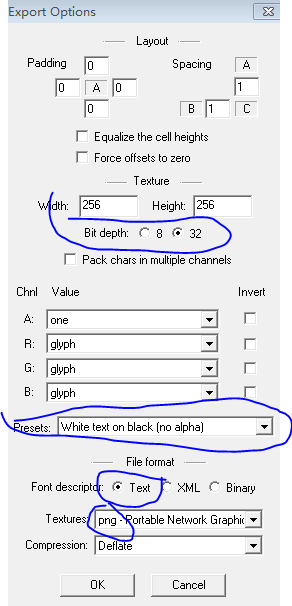

LabelTTF
Class
cc.LabelTTF
Defined in: CCLabelTTF.js
Extends cc.Sprite
cc.Class
cc.Note
cc.Sprite
cc.LabelTTF)
用處
ttf 字體渲染
屬性
//標籤 寬/高 度
{Number} boundingWidth
{Number} boundingHeight
//填充色
{cc.Color} fillStyle
//字體(如 "18px Verdan")
{String} font
//字體名
{String} fontName
//字體大小
{Number} fontSize
//不知用處 不過官方也建議不要調用
{Boolean} initWithStringAndTextDefinition
{Number} lineWidth
- The line width for stroke
{Number} shadowBlur
- The blur size of shadow
{Number} shadowOffsetX
- The x axis offset of shadow
{Number} shadowOffsetY
- The y axis offset of shadow
{Number} shadowOpacity
- The opacity of shadow
{String} string
- Content string of label
{cc.Color} strokeStyle
- The stroke color
//水平對齊
{Number} textAlign
- Horizontal Alignment of label: cc.TEXT_ALIGNMENT_LEFT|cc.TEXT_ALIGNMENT_CENTER|cc.TEXT_ALIGNMENT_RIGHT
//垂直對齊
{Number} verticalAlign
- Vertical Alignment of label: cc.VERTICAL_TEXT_ALIGNMENT_TOP|cc.VERTICAL_TEXT_ALIGNMENT_CENTER|cc.VERTICAL_TEXT_ALIGNMENT_BOTTOM
方法
//創建LabelTTF
static {cc.LabelTTF|Null} cc.LabelTTF.create(text, fontName, fontSize, dimensions, hAlignment, vAlignment)
{String} text //要顯示的的文本
{String|cc.FontDefinition} fontName Optional, Default: "Arial"
{Number} fontSize Optional, Default: 16
{cc.Size} dimensions Optional, Default: cc.size(0,0)
{Number} hAlignment Optional, Default: cc.TEXT_ALIGNMENT_LEFT
{Number} vAlignment Optional, Default: cc.VERTICAL_TEXT_ALIGNMENT_TOP
...
example
var helloLabel = new cc.LabelTTF("Hello World", "Arial", 38);
// position the label on the center of the screen
helloLabel.x = size.width / 2;
helloLabel.y = 0;
// add the label as a child to this layer
this.addChild(helloLabel, 5);
LabelBMFont
Class cc.LabelTTF Defined in: CCLabelBMFont.js Extends cc.SpriteBatchNode cc.Class cc.Note cc.SpriteBatchNode cc.LabelBMFont)
LabelBMFont
LabelBMFont 用於 支持 bf 字體 其使用 了類似 精靈集合 的渲染方式 以提高效率 是 cocos2d 中 最快的 文本渲染方式
屬性
boundingWidth - Width of the bounding box of label, the real content width is limited by boundingWidth string - Content string of label textAlign - Horizontal Alignment of label, cc.TEXT_ALIGNMENT_LEFT|cc.TEXT_ALIGNMENT_CENTER|cc.TEXT_ALIGNMENT_RIGHT
方法
<static> cc.LabelBMFont.create(str, fntFile, width, alignment, imageOffset) creates a bitmap font atlas with an initial string and the FNT file
example
var helloLabel = new cc.LabelBMFont("hello world", res.Font_path);
helloLabel.x = size.width / 2;
helloLabel.y = 0;
// add the label as a child to this layer
this.addChild(helloLabel, 5);
bmfont
bmfont 是一個 windows下 將 ttf 字體 專為 bm字體的工具 到 http://www.angelcode.com/products/bmfont/ 下載 最新版本
使用說明
1 字體設置 Options->Font settings font 字體 Charset 選擇unicode  2 導出設置 Options->Export Options Font descriptot 導出格式 cocos2d支持Text Presets 設置透明選項(White text width alpha) texture 紋理格式(png 似乎文件小點)  3 選擇要導出的文字 勾選 右側的分類 或者 Edit->Select char from file 通過 文件中的文本選擇 (文本文件 必須是 utf8 帶bom的格式) 4 導出 bm 字體 Options->Save bitmap font as...
命令行
//保持 配置 Options->Save configuration as... //生成 bf 字體 bmfont.exe" -t 文本文件 -c 配置文件路徑 -o 導出字體路徑